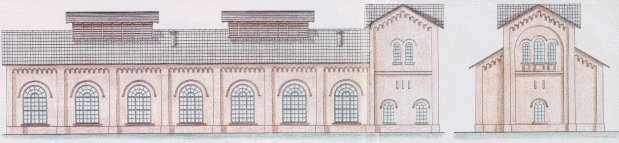
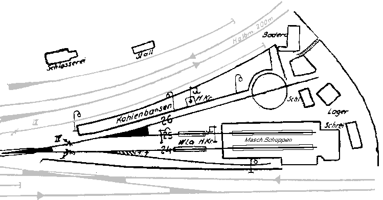
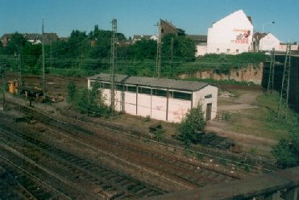

Krümelbahn
KrümelbahnDas Bw Solingen-Ohligs
Seit der Eröffnung des Bahnhofs Ohligs=Wald am 25. September 1867 besaß dieser einen Lokschuppen.
Der 2-ständige Lokschuppen war 34m lang, 12m breit und bot Platz für maximal sechs Tenderlokomotiven. An der Rückwand des Lokschuppens war ein Wasserturm angebaut, vor dem Schuppen befanden sich die Kohlenbühne, zwei Schlackengruben und eine 12m-Drehscheibe zum Wenden der Lokomotiven.

Dem Lokschuppen in Ohligs=Wald war eine kleine Werkstatt für Reparaturaufgaben angegliedert. Diese "Stationsschlosserei" als Außenstelle des Maschinenamtes Düsseldorf der KED Elberfeld beheimatete von Anfang an bereits 5 Lokomotiven, und diente auch zum Ergänzen der Kohle- und Wasservorräte bei den Lokomotiven u.a. der Baureihe pr. T9.3, pr. T11, pr. T12 und pr. T16.1 sowie später u.a. den BR 75 und 78, die den Verkehr Richtung Düsseldorf und Remscheid abwickelten.
Im Jahre 1907 wurde die Lokstation Ohligs zur Betriebswerkstätte "befördert" und vom Bw Opladen verwaltungstechnisch abgekoppelt. In Ohligs hatten jetzt 57 Mitarbeiter zehn Lokomotiven zu betreuen. Das Anlegen einer Wagen-Ausbesserungswerkstatt in Ohligs wurde durch die Eröffnung der Wagen-Ausbesserungswerkstatt in Opladen am 1. Juli 1907 nicht mehr realisiert.
Seinen Höhepunkt erlebte das Bw in den 20er Jahren. So wurde 1922 die in einem reinen Tenderlok-Bw überflüssige Drehscheibe ausgebaut, um mehr Platz zu schaffen. Haupteinsatzgebiet waren die Strecken nach Hilden und Vohwinkel über Wald - Gräfrath. Die Lokomotiven für die Fahrt von Ohligs nach Remscheid wurden hauptsächlich vom wesentlich größeren Bw Lennep gestellt.
Alle fabrikneuen T11, die in Ohligs stationiert waren, wurden in den frühen 20er Jahren durch T9.1 und T9.3 ersetzt.
Bis zum Ende seines Bestehens blieben dem Bw zwei der dort stationierten Lokomotiven der Baureihe 94.5 erhalten.
Am 15. Mai 1931 wurde die Betriebswerkstätte offiziell in "Bw Solingen-Ohligs" umbenannt; das Ende kam am 14. Mai 1950: das Bw Solingen-Ohligs wurde wieder zum Lokbahnhof des Bw Opladen heruntergestuft und am 7. Oktober 1951 als Dienststelle aufgelöst.
Nach der Auflösung wurden die Anlagen im Jahre 1961 abgerissen und durch eine moderne Wagenremise ersetzt. Hier ist heute ein Rottenkraftwagen Typ Klv 53 mit Anhänger Kla 03 zur Instandhaltung der Gleise, Weichen und Signale des Bahnhofs und seinen angrenzenden Strecken beheimatet. Diese Bahnmeisterei ist heute eine Außenstelle der Bahnmeisterei Opladen. Im Herbst 1995 sind erneut Bauarbeiten an der Wagenremise zu erkennen: diese wird vollständig renoviert, das Schuppengleis endet jedoch seitdem vor der Remise, der stationierte Klv 53 muss seitdem draußen bleiben.
Insgesamt waren in Ohligs nie weniger als 5 und nie mehr als 15 Lokomotiven stationiert.
Übersicht der im Bw Solingen-Ohligs beheimateten Lokomotiven von 1911 bis 1950:
| Lokomotivnummer |
Beginn der Beheimatung |
Ende der Beheimatung |
Bemerkungen |
Verbleib |
|---|---|---|---|---|
| 44 428 | 13.3.1946 | 20.5.1946 | Einheitslok | |
| 767 | 13.3.1946 | 20.5.1946 | ||
| 57 1247 | 3.4.1946 | 18.5.1946 | pr. G10 | |
| 74 431 | 27.9.1940 | 20.4.1944 | pr. T12 | + 10.8.1957 |
| 434 | 1.3.1933 | + 11.5.1934 | ||
| 478 | 31.5.1929 | 28.3.1936 | + 10.8.1957 | |
| 504 | 20.4.1943 10.8.1944 |
11.6.1944 6.1947 |
||
| 507 | 24.4.1937 | 17.12.1941 | + 14.7.1960 | |
| 516 | 21.5.1929 | 7.6.1946 | + 10.8.1957 | |
| 521 | 12.11.1944 | 1946 | + 14.7.1960 | |
| 536 | 9.3.1948 | 21.5.1950 | + 14.11.1957 | |
| 563 | 7.1940 | vor 31.12.1942 | + 28.7.1964 | |
| 576 | 26.10.1948 | 21.5.1950 | + 15.11.1957 | |
| 582 | 1948 | 1950 | + 20.6.1960 | |
| 591 | 1.3.1933 | nach 1943 | ||
| 604 | 1.7.1933 | vor 31.12.1942 | ||
| 629 | 5.3.1929 | 1945 | + 11.1.1952 | |
| 630 | 1.7.1933 | + 1937/1938 | ||
| 734 | 1.7.1933 | vor 31.12.1942 | + 14.3.1957 | |
| 91 454 | 1928 | 1931 | pr. T9.3 | |
| 554 | 1928 | 1931 | ||
| 555 | 1928 | 1931 | ||
| 997 | 2.11.1911 | 23.11.1911 | ||
| 1344 | 1928 | 1931 | ||
| 1346 | 1.7.1933 | |||
| 1348 | 1928 | 1931 | ||
| 1676 | 1930 | 1930 | ||
| 94 505 | 14.8.1930 | 19.8.1930 | pr. T16.1 | |
| 511 | 7.11.1923 | 31.5.1935 | ||
| 514 | 19.8.1930 | 6.1.1933 | ||
| 526 | 21.5.1935 10.12.1942 |
6.6.1941 13.8.1947 |
||
| 593 | 13.12.1923 | 19.12.1942 | ||
| 595 | 11.4.1947 | 10.9.1948 | ||
| 816 | 11.6.1946 | 4.7.1950 | ||
| 828 | 1.3.1946 | 4.7.1950 | ||
| 1207 | 11.6.1946 | 12.6.1947 | ||
| 1638 | 21.5.1946 | 31.5.1950 | ||
| 1654 | 26.6.1946 | 26.10.1948 |

Die Wagenremise im Bahnhof Solingen-Ohligs heute [7-01]